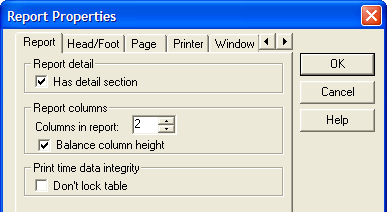
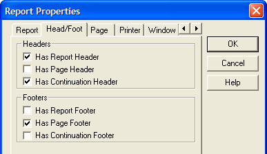
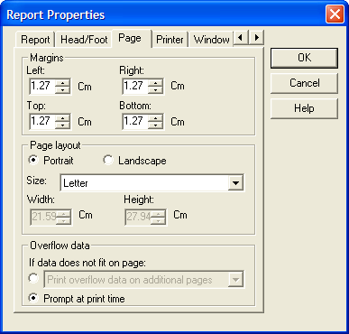
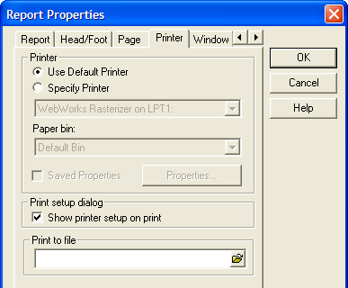
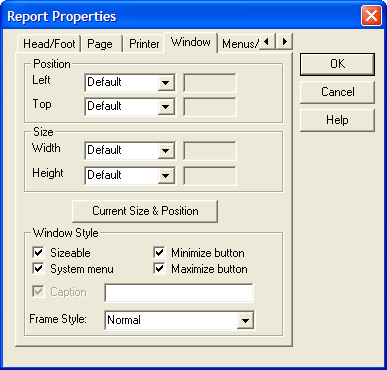
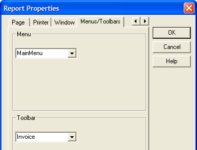

Report Properties
|
Item |
Description |
|
Has detail section |
Hides or displays the Detail section of the report. |
|
Columns in report |
Sets the number of columns that will appear in the Group and Detail sections of the report. |
|
Balance column height |
Whether to balance the height of columns when printing more than one column. |
|
Don't lock table |
Whether to lock the table that is providing data for the report when previewing or printing the report. |

|
Item |
Description |
|
Has report header |
Hides or displays the Report Header section of the report. |
|
Has page header |
Hides or displays the Page Header section of the report. |
|
Has continuation header |
Hides or displays the report's Continuation Header section. |
|
Has report footer |
Hides or displays the Report Footer section of the report. |
|
Has page footer |
Hides or displays the Page Footer section of the report. |
|
Has continuation footer |
Hides or displays the Continuation Footer section of the report. |

|
Item |
Description |
|
Left Margin |
The space between the left edge of the paper and the printed report. |
|
Right Margin |
The space between the right edge of the paper and the printed report. |
|
Top Margin |
The space between the top edge of the paper and the printed report. |
|
Bottom Margin |
The space between the bottom edge of the paper and the printed report. |
|
Page Layout |
Sets page orientation to "Portrait" or "Landscape". |
|
Size |
Selects a page format. |
|
Width |
Sets the width for a custom page size. |
|
Height |
Sets the height for a custom page size. |
|
Overflow Data |
Allows you to determine how to handle data that does not fit on a page. The options are:
|

|
Item |
Description |
|
Printer Selection |
Enables and disables the Printer drop-down list box. |
|
Printer |
Which printer to use. |
|
Paper bin |
Which paper bin on the printer to use. |
|
Saved Properties |
Refer to Setting Printer Options at Run Time. |
|
Show printer setup |
Whether the user should see the Print Setup dialog. |
|
Print to file |
The name of the print file to create. |

|
Item |
Description |
|
Left, Top |
Sets the left and top coordinates of the window. |
|
Width, Height |
Sets the width and height dimensions of the window. |
|
Mode and Value |
If the mode of any of the Position or Size values is set to "Percentage", then the value is interpreted as a percentage of the Alpha Five window. In all other cases, the values are in inches. If the mode of any of the Position or Size values is set to "Percentage", then the property setting is then "Percent". If the mode is set to "Inches" or "Cm", the value of the property setting is then "Absolute". If the mode is set to "Default, the value of the property setting is "Default". In this case the size of the form is set by the size of the form in the design window. If the mode is set to "Use Form Width" or "Use Form Height", the value of the property setting is "Form". In this case the size of the form is set by the size of the design window. |
|
Sizeable |
When checked, the user can resize the report window. |
|
System Menu |
When checked, there is a system menu in the upper left corner of the report window. |
|
Minimize Button |
When checked, there is a minimize button in the upper right corner of the report window. |
|
Maximize Button |
When checked, there is a maximize button in the upper right corner of the report window. |
|
Has Caption |
When checked, the caption field is enabled. |
|
Caption |
The name of the report window. |
|
Frame Style |
Sets the style of the window to "Normal" (modeless), "Dialog" (modal), or "Tool" (?). |

|
Item |
Description |
|
Menu |
Sets the menu that appears when previewing a report. |
|
Toolbar |
Sets the toolbar that appears when previewing a report. |

See Also
Report_Detail Properties, Report_Group Properties, Report_Region Properties